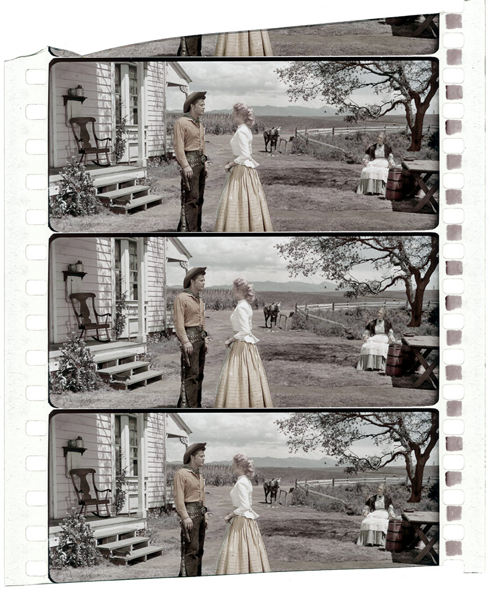

-
Section 1 : Naissance du cinéma
1989. L'Américain Thomas Edison et le Français Étienne-Jules Marey réalisent les premiers films de l'histoire du cinéma grâce à la fabrication et la commercialisation des premiers supports pelliculaires sensibles en celluloïd. À partir de 1894, avec l'invention du Kinétoscope d'Edison, puis du Cinématographe de Louis Lumière, toute l'industrie du cinéma se met en place : constructeurs d'appareils, éditeurs, usines de pellicule, laboratoires, exploitants forains et sédentaires, vendeurs, premiers studios… Tout est à concevoir : fabrication de pellicule, perforation, prise de vues, développement, tirage, projection… Avec des moyens parfois rudimentaires, les premiers « cinématographistes » réalisent des chefs-d'œuvre de poésie et de virtuosité.
Le Kinétoscope
Conçu en 1888 et diffusé en 1894 par Thomas Edison, cet appareil permet, moyennant le paiement d'un « nickel » (pièce de 5 cents), de visionner un film 35 mm perforé défilant en continu. L'appareil est lourd, peu maniable et utilisé par un seul spectateur à la fois. Il est un peu prématuré de parler cinéma.
Situé à l'intérieur du Kinétoscope, le Kinétographe enregistre les images sur un film perforé 35 mm grâce à un système d'avance intermittente de la pellicule. Avec cette toute première caméra, 148 films sont réalisés entre 1890 et 1895.
Le Cinématographe Lumière

Les frères Auguste et Louis Lumière, industriels de la photographie installés à Lyon, découvrent le Kinétoscope à Paris en septembre 1894. Leur idée : sortir les films de la boîte d'Edison et les montrer à un large public. Ils conçoivent un appareil de prises de vues, breveté en février 1895 et commercialisé en 1897, servant également de tireuse de copies et de projecteur. Le film utilisé est de la même largeur que celui d'Edison, 35 mm, mais perforé autrement. Les pellicules ne dépassent pas 20 m de longueur.
Le 28 décembre 1895, la première séance publique et payante est organisée dans le Salon indien du Grand Café, 14 boulevard des Capucines. Les 35 premiers spectateurs découvrent, pour 1 franc, un programme constitué de 10 films, dont La Sortie de l'usine Lumière à Lyon et Le Jardinier (intitulé plus tard L'Arroseur arrosé). Suite à ce succès, des dizaines d'opérateurs sont chargés par les frères Lumière de filmer et de projeter des films à travers le monde, constituant ainsi un catalogue de quelque 1 400 films destinés à la vente.
-
Section 2 : L'âge d'or du muet
Les années 1910 et 1920 voient technique et esthétique progresser parallèlement à pas de géant : les réalisateurs français d'avant-garde, toujours à la recherche de nouveaux effets visuels, bénéficient de la pointe des recherches entreprises par les ingénieurs de chez Éclair ou Pathé. L'Allemagne rivalise avec les caméras et projecteurs Ernemann, l'Angleterre produit des appareils Bioscope ou une curieuse caméra à air comprimé dite Aeroscope. Les États-Unis finissent par s'imposer grâce aux firmes Mitchell et Bell & Howell, dont l'excellent matériel triomphe dans le monde entier. Les caméras deviennent plus légères, plus solides, plus stables et commencent à se mettre en mouvement tandis qu'un un usage narratif et expressif du montage se développe. Si le tournage reste artisanal, tout autour s'industrialise pour des milliers de salles et des millions de spectateur. Avec le développement des techniques vient le temps des théories. La question de l'essence du cinéma est posée. L'expressionnisme en Allemagne, les avants-gardes en France, le cinéma soviétique expérimentent un nouveau langage par l'entremise de la machine.
Caméra 35 mm Parvo modèle JK série Y
La caméra Parvo apparaît sur le marché en 1909. Employée par la majorité des professionnels pour toutes les prises de vues, son succès est considérable et constitue la meilleure des références. D'une grande précision, la Parvo contient des magasins pouvant contenir 120 m de pellicule. En 1920, le Parvo est doté d'un système de fondu automatique et sera très utilisé par les cinéastes de l'avant-garde française. Il est la vedette de L'Homme à la caméra (URSS, 1929), film capital de Dziga Vertov qui célèbre « l'intelligence d'une machine » (Jean Epstein). 30 années d'expérience et de progrès technique incessants aboutissent au modèle « L », le plus perfectionné. Cette ultime version peut être commandée à la main ou électriquement et possède tous les dispositifs des modèles précédents. Près de 7000 « Parvo » fonctionnent dans le monde entier.
Caméra professionnelle à film 35 mm Pathé
Cette célèbre caméra 35 mm dite « professionnelle » est fabriquée en 1908 pour Pathé et encore utilisée dans les années 1920, avant d'être détrônée par les américaines Bell & Howell et Mitchell. Gainée de cuir noir, elle est notamment équipée de deux magasins, d'objectif Voigtländer, d'un dispositif de fondu automatique et de poinçon pour les trucages. Son trépied est muni d'une plate-forme mobile à manivelle et d'un support permettant de réaliser des panoramiques fluides horizontaux et verticaux. C'était la caméra préférée de Cecil B. DeMille et David W. Griffith.
La caméra Model 2709 B de Bell & Howell
La Bell & Howell rêve d'une caméra moderne, plus solide, capable de supplanter la Pathé professionnelle qui règne à cette époque. Produite à partir de 1912, la « 2709 B » est pleine de nouveautés : en fonte d'aluminium, livrée avec un trépied spécial, elle fonctionne avec une manivelle puis, à partir de 1919, avec un moteur électrique. Le mécanisme d'entraînement est alors l'un des meilleurs pour stabiliser la pellicule. La caméra possède une tourelle rotative à quatre objectifs, un viseur de grande qualité et un matte box pour loger des filtres et caches. Grâce à une avalanche d'innovations, la 2709 B chasse les caméras en bois des studios. Surnommée « Mickey Mouse Ears » en raison de son magasin débiteur et récepteur contenant 120 m de pellicule 35 mm, elle finit par symboliser le cinéma argentique tout entier. De grands chefs-opérateurs comme Karl Struss et Arthur C. Miller en font personnellement l'acquisition. Abel Gance l'utilise pour La Roue (1923), Erich von Stroheim pour The Merry Widow (1925), Charles Chaplin notamment pour The Gold Rush (1925).
La caméra Aeroscope de Kasimir Prószyński
Brevetée en 1909 par le Polonais Kasimir Prószyński (1875-1945), la caméra Aeroscope est fabriquée à partir de 1912 par Newman et Sinclair et commercialisée à Londres par Cherry Kearton Ltd. C'est l'un des premiers appareils de prise de vues dont le système d'entraînement à griffes du film (35 mm) est mû par de l'air comprimé. La caméra contient des réservoirs qu'il faut remplir d'air à l'aide d'une pompe, permettant de se passer des lourds et bruyants moteurs électriques. Son mécanisme à griffes très sophistiqué donne à la machine une certaine autonomie : plus besoin d'un opérateur chargé de tourner la manivelle.
Le triple écran d'Abel Gance
Film phare d'Abel Gance présenté en 1927, Napoléon fait l'effet d'une bombe avec ses multiples surimpressions, images déformées, plans vertigineux réalisés avec une équipe de huit cameramen pourvus de dix-huit caméras (Debrie, Éclair, Gillon, Pathé, Bell & Howell…). Cinéaste-inventeur qui ne cesse de repousser les limites techniques, Gance y expérimente, entre autres nouveautés, l'objectif « Brachyscope », offrant un champ maximum à une faible distance. Mais surtout, le film propose à certains moments une innovation extraordinaire, le triple écran, qui éblouit les spectateurs : trois projections côte à côte permettent de montrer soit trois scènes différentes, soit un immense panoramique de trois vues raccordées. Breveté par Gance, ce procédé complexe à réaliser, tant à la prise de vues qu'à la projection ouvre la voie aux futurs écrans larges des années 50, en particulier le CinémaScope.
-
Section 3 : Le cinéma sonore
La question du son préoccupe le cinéma dès 1900 et des centaines de brevets sont déposés en attendant l'avènement de l'inscription optique sur pellicule des vibrations sonores et de l'amplification électrique du son. Le Chanteur de Jazz triomphe sur les écrans en 1927 grâce à un système sonore par disque synchronisé, le Vitaphone. Le système à piste optique inscrite sur la pellicule 35 mm va finir par s'imposer, entraînant la réduction du format de l'image et portant à 24 images/seconde la vitesse de défilement des projecteurs à piste sonore. L'avènement des talkies (films parlants) modifie en profondeur et durablement la technique, l'économie, l'exploitation et l'esthétique du cinéma. Il existe plus d'une centaine de procédés sonores différents inventés depuis les années 1920.
Le Chronomégaphone Gaumont

Avec ses deux plateaux et ses deux pavillons, le luxueux Chronomégaphone est le plus perfectionné des appareils Gaumont. Un système de pompe à air comprimé permet d'amplifier le volume. Breveté en 1906, il est constitué d'un projecteur Chronophone, d'un phonographe et d'un tableau de commande, dit « chef d'orchestre », qui permet de corriger les problèmes de synchronisme durant la projection. Une cinquantaine d'exemplaires ont été fabriqués et envoyés à travers le monde, et plus de 700 phonoscènes ont été produites par la firme. Alice Guy, la première femme cinéaste, réalise bon nombre de ces vues sonores au studio des Buttes-Chaumont. Le système de plus de 400 kg est limité par la durée des disques phonographiques – qui n'excède pas 3 minutes – mais préfigure déjà celui du Vitaphone américain.
Le haut-parleur Vitaphone Western Electric 555W Receiver
À l'été 1926, un ingénieur américain employé aux Bell Telephone Laboratories, Albert L. Thuras, dépose le brevet d'un haut-parleur électrodynamique à pavillon exponentiel et directionnel de grande dimension. L'appareil est utilisé avec succès à New York pour la première du film musical Vitaphone Don Juan (Alan Crosland). Pièce rarissime, le Western Electric 555W Receiver, avec son pavillon en bois haut de 2 mètres, devient l'un des appareils les plus mythiques de l'histoire du cinéma et contribue largement à la propagation des films « 100 % sonores et chantants ». Certaines salles vont jusqu'à placer 12 haut-parleurs derrière l'écran pour diffuser le son.
Projecteur 35 mm sonore Almo Kino Erko IV Electro Kino à disque Vitaphone et lecteur son Laetafoon type Movietone
Fabriqué à Rotterdam en 1929, ce projecteur 35 mm sonore est équipé d'un tourne-disque pour le système Vitaphone et d'un lecteur de son optique type Movietone. Très rare, ce modèle est le fruit d'une collaboration laborieuse entre les chercheurs, les fabricants d'équipements cinématographiques et le monde de la finance. Le Vitaphone a été utilisé pour des longs métrages et près de 2 000 courts métrages produits par la Warner Bros. entre 1926 et 1930. Mais ce procédé est très rapidement abandonné au profit du son optique sur film.
Présenté le 6 octobre 1927 à New York, The Jazz Singer (Le Chanteur de jazz) d'Alan Crosland allait révolutionner l'industrie cinématographique. « You ain't heard nothin' yet! » (« Vous n'avez encore rien entendu ! »), lance l'acteur Al Jolson au public avant d'entamer une chanson. Deux petites minutes de dialogues synchronisés grâce au système de disques Vitaphone fascinent les foules. Le film rapporte deux millions et demi de dollars, pour un coût de cinq cent mille.
Mitchell BNC Studio Camera (Blimped Noiseless Camera)

En 1934, la Mitchell Camera Corporation met au point la première « BNC » (Blimped Noiseless Camera). Enfermée dans un caisson insonorisé (blimp), cette incontournable caméra 35 mm est utilisée à partir de 1937 et pendant plus de trente ans dans tous les studios de cinéma. Gregg Toland tourne avec ce modèle, fabriqué de 1938 à 1967, le Citizen Kane d'Orson Welles (1939). Jean-Luc Godard et Raoul Coutard la célèbrent dans Le Mépris (1963). Au lendemain de la Seconde Guerre mondiale, la firme californienne souligne que « 85% des films projetés dans le monde entier sont filmés par une Mitchell ».
Résonateur dynharmonique Thomson-Houston
Conçu en 1934 à la demande des musiciens Reynaldo Hahn, Gabriel Pierné et Maurice Ravel, ce haut-parleur de cinéma a été mis au point par Reynaldo Hahn et Gabriel Fauré. Il est constitué de 60 tuyaux en bois allant jusqu'à 85 cm de hauteur. Le son est diffusé par un haut-parleur électrodynamique situé dans le socle de l'appareil.
Le Nagra

Inventé par l'ingénieur suisse d'origine polonaise Stefan Kudelski en 1951, l'enregistreur Nagra fonctionne à piles. Solide et léger, l'appareil offre la même qualité sonore que les gros enregistreurs de studio, tout en s'allégeant des nombreux câbles et du « camion son » nécessaires auparavant. Rapidement adopté par tous les ingénieurs du son, il révolutionne le métier.
-
Section 4 : Le cinéma pour tous
Dès la fin 1896, la notion de « cinéma pour tous » apparaît grâce à la caméra réversible (pouvant servir aussi de tireuse et de projecteur) dite Kinétographe pour amateur : « Faites vos bandes négatives et positives, faites chez vous des projections animées. » Cet appareil fonctionne encore avec de la pellicule 35 mm professionnelle. Les formats inférieurs, précisément destinés à la clientèle des amateurs, voient le jour à partir de 1898 avec le Birtac, le Pathé-Kok ou le Edison Home Kinetoscope. Mais c'est le triomphe de la Pathé-Baby en 1922 et du format 16 mm lancé par Kodak en 1923, qui fait entrer le cinéma dans les foyers, peu avant le Televisor, ancêtre de notre télévision, inventé par l'Écossais John Logie Baird en 1926.
Le Pathé-Baby
Avec son format 9,5 mm, cette petite caméra à manivelle au fonctionnement d'une simplicité enfantine, ravit l'amateur qui peut désormais réaliser ses propres vues. Des usines de tirage s'ouvrent partout en Europe et sur le continent américain. Les modèles se perfectionnent chaque année (muets, sonores). Les accessoires se multiplient (agrandisseurs, porte-filtres, titreuses, écrans, trépieds…).
La caméra Kodak 16 mm
L'idée d'un format 16 mm pour amateurs naît en 1914 dans les laboratoires Kodak. Trois ans plus tard, la caméra Cine-Kodak Model A est commercialisée. Robuste et de bonne qualité, elle permet d'enregistrer 30 m de film 16 mm. Suivront des centaines de modèles différents de caméras et de projecteurs. George Eastman lance en 1928 un film 16 mm couleur, le magnifique procédé Kodacolor (la firme allemande Agfa introduira en 1932 un procédé analogue, l'Agfacolor). Avec le parlant, le 16 mm est très vite pourvu d'une piste sonore optique. Au cours des années 1950, il devient le format préféré des documentaristes, de la télévision, du cinéma-vérité et de l'expérimental.

Le Televisor
Le 26 janvier 1926, l'Écossais John Logie Baird met au point le premier récepteur de télévision commercialisé en Europe. Deux ans plus tard, le premier signal de télévision est émis de Londres à New York, relayé au milieu de l'Atlantique par un navire. En 1930, la commercialisation du Televisor est lancée et deux émetteurs sont construits permettant la diffusion de l'image et du son en simultané. Sur l'écran muni d'une loupe, les images, captées par la radio et une antenne, sont peu définies et souffrent de déformations. Un haut-parleur extérieur restitue les sons. L'invention du tube cathodique va, par la suite, améliorer grandement la technique et rendre les machines de Baird obsolètes.

-
Section 5 : Expérimentations 1
L'évolution du cinéma s'accompagne, depuis les débuts, d'expérimentations en tous genres. Dès 1896, on peint les pellicules au pinceau puis au pochoir. En 1912, la firme Technicolor invente la solution du système trichrome. En 1952 déferle la première vague des films en 3D, annonçant des procédés de plus en plus spectaculaires comme le relief, le Cinérama, l'Odorama… Pourtant, au début des années 50, la toute jeune télévision constitue une terrible concurrence pour le cinéma, et c'est l'invention du CinémaScope qui va sauver le septième art en 1953, bouleversant le cadre traditionnel de l'image animée.
L'Hypergonar
Inventé par le professeur Chrétien en 1927, ce procédé consiste à anamorphoser les images à la prise de vue, en les compressant, pour les redresser ensuite lors de la projection grâce à un système optique. En France, Claude Autant-Lara réalise un film avec l'Hypergonar : Construire un feu, d'après le roman de Jack London, avec images en hauteur et en largeur. Mais lorsque le film sort en 1929, le cinéma est devenu parlant, et c'est un échec.
Le CinémaScope
La Fox rachète et développe le procédé de Chrétien en 1953. Le CinémaScope permet de projeter des images très larges (au ratio 2,35:1). Par rapport aux formats « carrés » (1,33:1, puis 1,37:1), l'ampleur de l'image prend tout son sens dans les décors de westerns et de péplums alors très en vogue. Le premier film du genre est La Tunique, d'Henry Koster, qui sort dès 1953. Le nouveau format, rapidement adopté par la majorité des réalisateurs, change radicalement la donne en termes de mise en scène, de cadrage, de direction d'acteurs, de montage même.
Pour l'anecdote, le format du CinémaScope est fixé en projection à 2,35:1, après avoir oscillé entre 2,55:1 et 2,66:1. Certains opérateurs ou cinéastes restent réticents, comme Fritz Lang, qui déclarera : « Le CinémaScope n'est pas un format fait pour filmer les hommes, mais les serpents et les enterrements. »
Le projecteur Todd-AO 70 mm
Inventé en 1955, le procédé Todd-AO 70 mm donne des résultats spectaculaires dès la première réalisation qui en fait usage : Oklahoma!, de Fred Zinnemann, présenté le 13 octobre 1955 à New York.
Le projecteur associé à ce format de pellicule, le Todd-AO 70 mm, fabriqué entre 1955 et 1966, pèse 600 kg. D'une solidité à toute épreuve, c'est l'un des plus beaux projecteurs de tous les temps – il est d'ailleurs surnommé la « Rolls du 70 mm ».
En 2015, Quentin Tarantino a fait racheter les exemplaires qui subsistaient aux États-Unis afin de rééquiper les salles numériques désormais incapables de projeter son film tourné en 70 mm Ultra Panavision, Les Huit salopards (The Hateful Eight).
Le Technicolor
La Technicolor Motion Pictures Corporation est fondée en 1915. Son but : le cinéma en couleur. Les procédés utilisés par Technicolor durant les années 1920 n'enregistrent d'abord que le rouge et le vert. En 1926, le film bichrome Le Pirate Noir, avec Douglas Fairbanks, fait sensation. En 1932, ce procédé est remplacé par le Technicolor trichrome. La caméra qui lui est associée est alors fabriquée par la société Mitchell.
Malgré le succès de ses appareils – en 1932, le système reçoit un Oscar scientifique et technique – la firme Technicolor connaît une période économique difficile après la crise de 1929. Les Silly Symphonies de Walt Disney vont lui permettre de franchir ce cap. La Pioneer Films sort ensuite La Cucaracha (Lloyd Corrigan, 1933), puis la RKO produit Becky Sharp de Rouben Mamoulian en 1935.
Peu de caméras sont produites : le matériel fabriqué est très précis, et ses spécificités en font un appareil cher à utiliser, dédié en priorité aux films à grand budget et à grand spectacle : péplums, westerns et comédies musicales. La caméra nécessite un éclairage intense au tournage, et son moteur, bruyant, exige qu'elle soit enfermée dans un énorme blimp (caisson insonorisé). Le modèle que présente l'exposition est une des pièces maîtresses de la collection de la Cinémathèque.
Seules 28 caméras Model D ont été livrées à partir de 1932, numérotées de D1 à D12, puis de D14 à D29 (la D13 n'ayant pas été fabriquée par superstition).
Le haut-parleur de Citizen Kane
Orson Welles, réalisateur mais aussi homme de radio, est particulièrement sensible au son sur ses films. Pour Citizen Kane, il invente avec la RCA (Radio Corporation of America) un système spécifique, qui ne servira qu'à ce seul film. Il s'agit d'un procédé de piste sonore à masque, capable d'augmenter à des instants précis la dynamique sonore de 6 dB sans toucher au niveau du bruit de fond ni noyer les bruits faibles. Ce système fait merveille dans certaines scènes, comme celle de l'opéra.
Le Steadicam
Dès 1972, pour les besoins de certains tournages, le directeur de la photographie Garrett Brown bricole une sorte de petite tige métallique pour y accrocher une caméra. En 1974, il dépose aux États-Unis un brevet d'invention pour ce nouveau système de stabilisation de caméra portée. Le Steadicam (de steady camera, caméra stable) se compose de trois éléments : – un harnais maintenant le buste du cameraman, – un bras articulé en acier, qui se fixe sur ce harnais à la hauteur des abdominaux (ce bras, muni de puissants ressorts, câbles et poulies, est à la fois porteur et amortisseur), – un support de caméra, qui se fixe sur le bras et qui fait office de contrepoids.

L'intérêt du système est évident : on peut déplacer la caméra en courant, en montant ou descendant un escalier, tout en gardant une grande stabilité d'image. Le Steadicam fait ses débuts sur En route pour la gloire (Bound for Glory) de Hal Ashby (1975) et arrive en France la même année, adopté par Noël Véry, Yves Nolleau et Jacques Monge. Dans Marathon Man de John Schlesinger (1976), le Steadicam permet de suivre Dustin Hoffman en train de courir. Garrett Brown reçoit un Oscar scientifique et technique en 1977 pour son invention.
Sur le tournage de Shining (Stanley Kubrick, 1980), c'est Garrett Brown lui-même qui manœuvre le Steadicam, notamment pour les scènes du labyrinthe ou de Danny pédalant sur son tricycle dans les couloirs de l'hôtel.
La Louma
Grue légère conçue par les Français Alain Masseron et Jean-Marie Lavalou, la Louma doit son nom à la contraction des patronymes de ses deux inventeurs. Le fonctionnement est simple, mais révolutionnaire. La caméra, libérée de ses contraintes terrestres, se meut dans l'espace avec fluidité, peut monter très haut ou descendre très bas, obéissant au millimètre pour se jouer des obstacles. La version primitive est conçue en octobre 1970 au sein de l'Établissement cinématographique et photographique des armées. Le modèle est amélioré, et en 1972, une Louma très aboutie est présentée à la presse. Le tournage du film de René Clément La Course du lièvre à travers les champs sert de test pour une première utilisation en situation.
En 1974-75, un modèle avec tête motorisée et télécommandée est conçu. Roman Polanski, accompagné du chef opérateur Sven Nykvist et du décorateur Pierre Guffroy, l'adopte dès 1976 pour les plans-séquences d'ouverture et de clôture du Locataire.
Steven Spielberg entend parler de ce procédé révolutionnaire, mais le rendez-vous fixé à Paris pour lui présenter l'appareil ne peut avoir lieu. Pugnaces, Lavalou et Masseron lui feront la démonstration dans le jardin de son hôtel au festival de Deauville, où il est venu présenter Rencontres du troisième type. Spielberg teste l'appareil, et, immédiatement séduit, décide d'emporter une Louma aux États-Unis pour tourner 1941. « This is my new toy ! », proclame le réalisateur, enthousiaste, qui la réutilisera notamment pour Indiana Jones.
-
Section 6 : Expérimentations 2
Comment la technique engendre-t-elle de nouvelles formes ? De quelle façon la recherche esthétique donne-t-elle naissance à de nouveaux appareils, systèmes ou procédés ? Les cinéastes s'interrogent sur le versant documentaire du cinéma, sur la manière de représenter le réel, de filmer un plan-séquence en extérieur… Dès lors se pose la question des outils correspondants. La réponse passe par l'invention de matériel mieux adapté, c'est-à-dire plus léger, plus maniable, moins cher, permettant de tourner en équipe réduite, loin des studios. Combinée à la cinéphilie et au rejet de l'académisme, l'évolution technique des caméras permet à la fin des années 50 l'éclosion de la Nouvelle Vague.
Le Caméflex
Après la Seconde Guerre mondiale, André Coutant, ingénieur français, incarne la relève du métier. Il travaille alors pour la firme Éclair et lance en 1947 le Caméflex, caméra 35 mm portable à visée reflex. Légère, elle se porte facilement sur l'épaule. Dotée d'un magasin de bonne capacité et à enclenchement instantané, elle permet de tourner bien plus rapidement, et particulièrement les plans-séquences.

Adopté par Truffaut, par Godard et son chef-opérateur Raoul Coutard, le Caméflex – parfois surnommé le « masque à gaz » en raison de sa forme – va devenir l'appareil emblématique de la Nouvelle Vague. Les grands cinéastes américains l'utilisent aussi volontiers, de Welles, dont c'est la caméra préférée, à Francis Ford Coppola. Son succès est tel qu'elle rapportera à ses créateurs un Oscar en 1950.
Son seul inconvénient est de produire un bruit trop important pour permettre une prise de son simultanée – les films emblématiques de la Nouvelle Vague (À bout de souffle, Les Quatre cents coups) sont d'ailleurs tournés sans son direct, puis postsynchronisés. En 1957, un caisson insonorisé, le Caméblimp, vient apporter un début de réponse à ce problème, mais alourdit bien sûr le dispositif.
L'Éclair 16

En 1961, André Coutant conçoit la caméra Éclair 16. Initialement destinée à la télévision, elle est légère, faible et extrêmement silencieuse (mécanisme à « griffes douces »), et permet une prise de son directe et synchrone via un câble relié à un magnétophone externe comme le Nagra, inventé à la même époque. Cette particularité permet un renouvellement des méthodes du documentaire : le « cinéma-vérité » qui se développe alors s'appuie sur l'enregistrement simultané du son et de l'image.
L'Aaton 7 et l'Aaton 8-35
En 1971, Jean-Pierre Beauviala, architecte, poète, électronicien, ingénieur et inventeur, fonde Aaton après avoir travaillé un temps chez Éclair. Avec sa société, il innove en concevant des caméras très légères, avec une nouvelle ergonomie. En 1972, la caméra 16 mm Aaton 7 voir le jour, et le premier exemplaire est acheté par l'ORTF. Son poids : 6,8 kg seulement. On peut ainsi la porter « comme un chat sur l'épaule ».
Beauviala développe une relation privilégiée avec nombre de cinéastes : Louis Malle, Jean Rouch, et surtout Jean-Luc Godard. Celui-ci s'installe près de chez lui, à Grenoble, et lui demande de concevoir une caméra 35 mm portable qui pourrait « tenir dans le vide-poche d'une voiture ». L'équipe d'Aaton se met au travail et livre en 1979 un prototype, la 8-35, extrêmement légère. Sur son magasin est gravé : « Jean-Luc Godard a pensé à vous. Et vous ? »

Quelques plans sont tournés par le directeur de la photo William Lubtschansky pour Sauve qui peut (la vie) (1979) mais Godard n'en veut finalement plus. Et c'est l'Aaton 35, modèle beaucoup plus abouti, qui sera commercialisé à partir de 1989.
La société Aaton doit son nom à un dieu égyptien du soleil, auquel Beauviala a ajouté un « A » pour être certains de figurer en tête des listes alphabétiques.
-
Section 7 : Argentique / numérique
À partir des années 1970, électronique et informatique envahissent peu à peu l'univers jusqu'alors photochimique et mécanique du cinématographe. Des cinéastes d'envergure – George Lucas, Francis Ford Coppola, Jean-Luc Godard – prônent leur utilisation à grande échelle. L'ère numérique moderne transforme radicalement la cinématographie des débuts. Le son numérique, les effets spéciaux, l'imagerie de synthèse, la 3D, la VR (réalité virtuelle) entraînent des modifications spectaculaires des canons narratifs et formels.
La Panavision Panaflex Platinum

En 1972, la société californienne Panavision sort une caméra de studio pouvant aussi se porter sur l'épaule, le Panaflex. Une version améliorée, dite « Gold », sort en 1976, remplacée dans les années 1980 par la Platinum – qui devient l'une des caméras préférées des réalisateurs hollywoodiens.
La caméra ARRI 35 III

En 1996, pour filmer l'infiniment petit dans Microcosmos, Marie Pérennou et Claude Nuridsany utilisent une caméra motorisée munie d'objectifs spéciaux et montée sur un bâti très lourd, pour la stabilisation. Elle obéit à la moindre commande grâce à la technique informatisée du motion control qui donne des mouvements doux et quasi imperceptibles. Elle peut filmer à grande vitesse de façon à ralentir certains gestes rapides.
Le Cantar

Dès les années 2000, Aaton explore la technique du son numérique et élabore un enregistreur portable, le Cantar, qui devient une référence pour les preneurs de son et finit de reléguer au grenier les magnétophones à bande magnétique. Grâce à sa robustesse et son ergonomie, l'appareil est parfaitement adapté à un usage extérieur, idéal pour les prises de son destinées à la reproduction multicanal.
L'Alexa
En 2010, la firme allemande ARRI lance le prototype d'une caméra numérique. Améliorée et déclinée en versions toujours plus sophistiquées, l'Alexa devient une caméra incontournable. Légère, robuste, ergonomique, silencieuse, produisant des images de plus en plus belles, l'Alexa est adoptée par de très grands directeurs de la photographie, tels Robert Richardson pour Hugo Cabret de Martin Scorsese (2011), Darius Khondji pour Amour de Michael Haneke (2012). Le directeur de la photographie Emmanuel Lubezki tourne avec elle The Revenant d'Alejandro González Iñárritu dans des conditions extrêmes, sans l'apport d'aucune lumière artificielle, ce qui lui vaudra un Oscar en 2016.